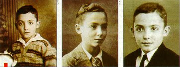

José Saramago nasceu numa família de escasssas posses, onde os seus pais eram analfabetos. Quando ele tinha dois anos instalaram-se numas águas furtadas, em Lisboa. Apesar de viver na capital, passava todos os anos alguns meses na sua terra natal(Azinhaga do Ribatejo), a que se sentiu sempre muito ligado.
O magro salário do pai que era polícia na capital, não permitiu a José fazer mais do que dois anos no Liceu Gil Vicente. Transitou para a Escola Industrial Afonso Domingues, onde concluíu, aos 16 anos durante o curso de serralharia mecânica, que lhe permitiu trabalhar três anos como operário. Aparentemente, estava destinado a uma vida obscura e trivial, mas o facto de recorrer com frequência à Biblioteca Municipal, para satisfazer o gosto pelo conhecimento e o prazer da leitura, deixaria prever voos mais altos.

José Saramago estreou na literatura com o romance “Terra do Pecado” (1947).
Foi diretor literário de uma editora, jornalista e tradutor. Colaborou com vários jornais e revistas, entre eles, o Diário de Lisboa, A Capital e a Seara Nova, onde exerceu a função de cronista.
Sua trajetória literária passou por várias fases:
Como romancista o autor se consagrou ao receber o “Prêmio Cidade de Lisboa” com Levantando do Chão (1980), que se tornou Best-Seller internacional.
José Saramago desenvolveu uma espécie de historicismo fantástico onde sua imaginação, aliada a um ilimitado amor à vida, em cada minúcia da verdade humana ao longo do tempo, reelabora fatos da história de sua terra, como nas obras:
Saramago faleceu no dia 18 de junho de 2010, aos 87 anos de idade, na sua casa em Lanzarote onde residia com a mulher Pilar del Rio, vítima de leucemia crónica. O escritor estava doente havia algum tempo e o seu estado de saúde agravou-se na sua última semana de vida. O seu funeral teve honras de Estado, tendo o seu corpo sido cremado no Cemitério do Alto de São João, em Lisboa. As cinzas do escritor foram depositadas aos pés de uma oliveira, em Lisboa em 18 de junho de 2011.